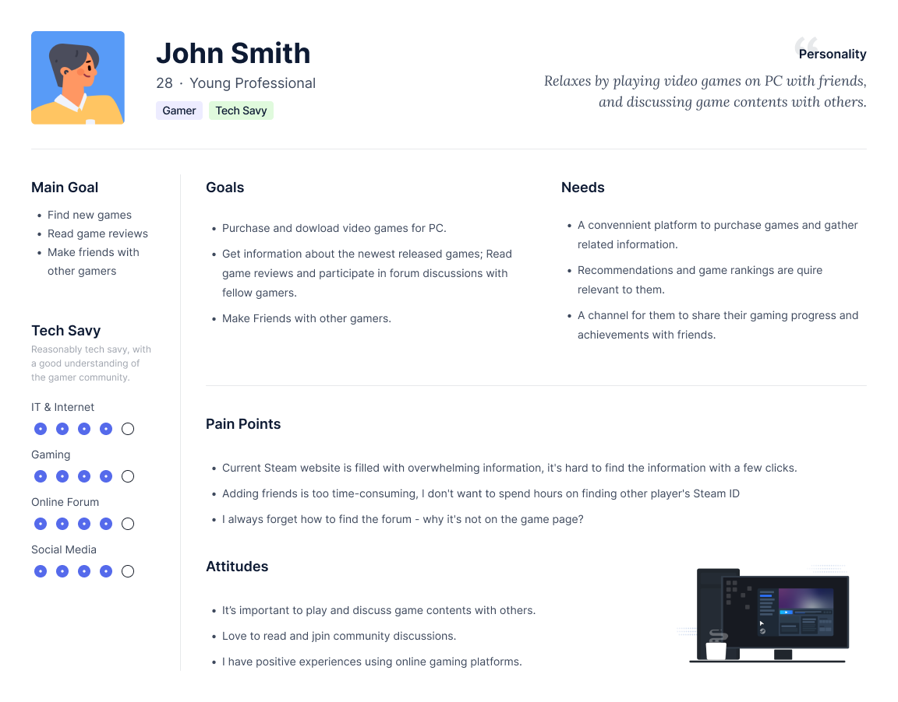

Deliverables
Information ArchitectureInterviews
Persona
Low & High Fidelity Prototype
Usability Testing
Clickable Prototype
Team
Yidan WangAzhar Nazir
Declan Baxter
Ketan Kulkarni
Morgana Da Rocha Mella
Platform & Tools
Platform: DesktopTools: Figma & Google Workspace
Timeline
4 MonthsJan - Apr 2022
Overview
We were given a task to redesign the user flow for Steam as part of a course assignment, after conducting a series of user research methodologies, we decided to simplify the Navigation System, extending the Game Detail and redesign the Friend Page to bring a better user experience to players.Problem
 Can one of the largest online video game distributors have bad UX design?
Can one of the largest online video game distributors have bad UX design?The answer is YES! Players always find it is confusing to navigate the Steam website, even for experienced users it is difficult for them to get desired information with a few clicks. Overwhelming information with the lack of consistency and real world matching in labels highly reduce the user experience thus block the business to attract more new users.
Solution
1. Simplified Navigation with consistent terminology.2. Redesigned Game Details & Friends Section for a smoother user flow.
Success
Revised prototype received 100% success rate during the usability testing.Design Process

Discover
Heuristic Evaluation
Used to explore areas for improvement on the existing product website. We, as the UX researcher and designer, did a thorough evaluation of the website based on 5 mostly common user goals and identified various issues. The resulting analysis provided preparation of a suggested information architecture development.Interviews
With the above findings in mind, we then conducted a series of interviews with 10 participants on existing product and discovered the following gaps in user needs:
1. Labels and Language: the lack of consistency, familiarity and real-world match with labeling could be confusing for users.
2.Too Much Information: the excessive amount of information present on the website at all times which users describe as very challenging to understand.
Define
Information Architecture
1. Simplify Navigation with consistent terminology2. Redesign Game Details & Friends Section for easier use

Persona
Who are our target users? We deep dived into current user database of Steam to better understand their behavior and needs before ideating the design. Together with the interview data we collected earlier in the discovery phase, we constructed a user persona that best represent our user population. User Flow
During the design process, we further revised our user goals down to 3 mostly needed ones as our user research reveals the rest 2 goals were hardly conducted or even noticed by target.User Goal 1: Find a newly released game. User Goal 2: Find a game review.
 User Goal 3: Send a friend request.
User Goal 3: Send a friend request.
Ideate
Prototype
We created 34 new pages in order to present a new version of the product based on the three main users’ tasks. The prototype includes proposed solutions that were made available from previous research methods, and implemented in the first usability testing. After the team conducted a second round of usability testing, new problems were found and the prototype adjusted to the final proposed version, below.

Clickable Prototype
Try the clickable prototype below!Next Steps
Extension Pack Page
We found users have difficulty determining what games offer extension packs & the details of the extension pack.Recommendations:
1. Include detailed descriptions of expansion pack within Game Details Page.
2. Include the appropriate Symbol on the brief Game Preview descriptions (found on New Releases, Top Sellers, etc…).
Review & Analyze Game Stats
Game stats are difficult to find on the Steam website, have no sort or filter options & smaller games are not included in game stats.Recommendations:
1. Make game stats more visible to users.
2. Filter & sort options within the Game Stats page, or an option to export to a spreadsheet.
3. Include more games in Game Stats, not just the “Top 10”.
Conclusion
After conducting Card Sorting, Information Architecture revision, and Two Separate Rounds of Usability Testing, our team learned user insights and pain points while using the Steam Website. When applying industry standard design principles to separate research methods, including Usability Testing sessions, our Key Findings emphasize the current issues users experience.
The recommendations provided are based on user tasks that we discovered are the foundation of effectively using the Steam Website.
We believe that implementing the recommendations in this presentation will provide the current user base with a better overall experience on Steam. With the recommendations made we hope Steam sees better exposure to focused objectives, better engagement from the community, and be more likely to recommend Steam’s service to friends. We also believe that with the implemented changes, new users will have a much better experience.